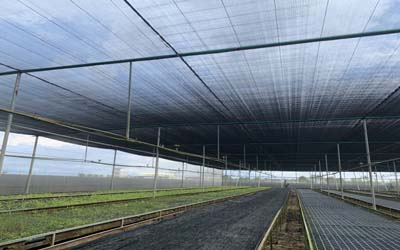
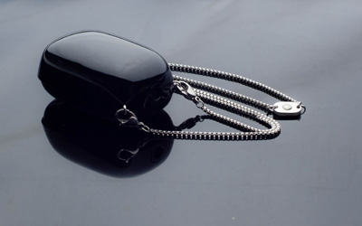
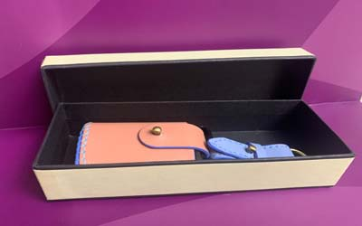

光觸媒加工(設計、合作)步驟：
1. 依客戶所需(討論用途、目標價)；使用環境條件，其抗菌或抗污、除臭....等不同功能是否可行。
2. 依被加工材料或元件，選用最佳之光觸媒原料及最佳節省原料之加工法，以及成本目標價格是否可行。
3. 產品或模組使用光學設計，使其充份發揮其效果。
4. 其它(專利、安規、效能驗證...等)。
世屋光觸媒加工自2002年從日本引進台灣，已具有20多年之加工技術與經驗，並榮獲政府研發補助及英國發明大賞。

可見光光觸媒又名可視光光觸媒，它是在於我們人類可視光之範圍，且波長超過400nm，此部份起於日本在2002年研究，基本上還是以二氧化鈦最基材之延伸開發，可分為兩種方法將期能階系帶改變：
(金屬系部分)崁入一些奈米金屬，有銅、銀、白金、錳..等等，其穩定度較高，但還是有氧化或其他問題在。
(非金屬系部分)崁加入氨、氮、碳....等等但不穩定，且製程昂貴，比白金貴，很難實現商業化
其他類Wo3、CdSe、Cds....等等，因為部份含有毒重金屬，或不抗強酸鹼等等因素不易實用。

雖然在實驗室，許多數據目前都很不錯，但是其實是有許多限制部分，在初期效果是不錯，但後面能力會下降甚至失效，這是一般販售原料商不瞭解之處，商品製造商更不瞭解，而消費者更不可能不知道，因此目前傳統研究之400nm以下之光觸媒還是為主力，其中以用改良型之波長在385nm部份之材料相比，其實數據還是差不少，另外可見光光觸媒波長是否與現有LED燈具波長吻合，尚有許多問題存在，並不是所有產品都合適使用，這是消費者須注意事項。

請洽本公司
產品開發概念需符合市場須求、價格等，經討論後才適合開發，可開發商品如除甲醛光觸媒噴劑材料到空氣清淨機等等。
1. 依客戶所需(討論用途、目標價)；使用環境條件，其抗菌或抗污、除臭....等不同功能是否可行。
2. 依被加工材料或元件，選用最佳之光觸媒原料及最佳節省原料之加工法，以及成本目標價格是否可行。
3. 產品或模組使用光學設計，使其充份發揮其效果。
4. 其它(專利、安規、效能驗證...等)。
世屋光觸媒加工自2002年從日本引進台灣，已具有20多年之加工技術與經驗，並榮獲政府研發補助及英國發明大賞。